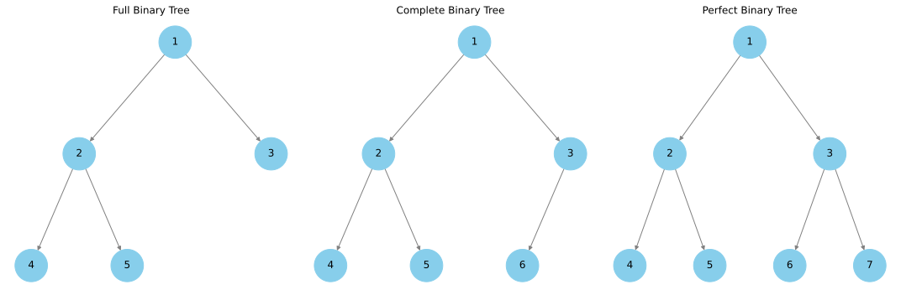

Concept#

Introduction#
Trees are an indispensable and highly efficient data structure used extensively in computer science. They provide a structured, hierarchical model that inherently organizes data in a tiered fashion, making many operations efficient and manageable. In a tree structure, each individual unit of data is called a node, and the connections between them are known as edges.
Unlike linear data structures such as arrays and linked lists, trees are non-linear and grow in multiple directions. But unlike a general graph, a tree has a root node and can’t contain cycles, and hence by definition, a tree is an undirected and connected acyclic graph. This makes the tree data structure less flexible than a graph but often easier to analyze and work with.
Trees can be further classified based on their characteristics into several types: Binary Trees, Binary Search Trees, AVL Trees, Heap Trees, and more. These various types have different properties and use-cases, making them suited to different kinds of problems.
Applications of trees in computer science are numerous and profound:
File Systems: Almost every modern operating system uses a tree to represent the hierarchical structure of a file system. Each folder is a node, and folders within folders become child nodes, creating a tree structure.
Database Indexing: Trees, especially balanced search trees like AVL trees or Red-Black trees, are widely used in databases to enable fast data retrieval.
Compiler Design: In compilers, syntax trees transform code written by developers into a format that can be understood and optimized by the compiler.
Network Routing Algorithms: Tree structures are often used in routing algorithms, as they can efficiently represent the paths between various network nodes.
Machine Learning: Decision Trees are a fundamental concept in machine learning and artificial intelligence, used for non-parametric supervised learning.
Despite their apparent simplicity, trees underpin many core computer science concepts and technologies. Mastering how they work is crucial to understanding, designing, and implementing effective algorithms and data structures. For more comprehensive information on trees, you can visit Wikipedia.
Definition#
Definition 207 (Tree)
A Tree is a special type of graph that is extensively used in computer science and mathematics. It is a type of an undirected graph and is defined as an ordered pair \(T=(V, E)\), where:
\(V\) represents a set of vertices (also referred to as nodes or points). Each vertex is a unique entity within the tree.
\(E \subseteq \left\{\left\{x, y \right\} \mid x, y \in V \land x \neq y\right\}\) is a set of edges. Each edge in this set is an unordered pair of vertices, denoted as \(\{x, y\}\), where \(x\) and \(y\) are distinct vertices from the set \(V\) (\(x, y \in V\) and \(x \neq y\)). This means that each edge connects two different vertices.
However, unlike a general undirected graph, a tree has two additional properties:
A tree is connected, meaning that there is a path between every pair of vertices.
A tree contains no cycles, making it a acyclic graph.
These properties uniquely define a tree among other types of undirected graphs. In many cases, one of the vertices is designated as the root of the tree, turning it into a rooted tree, and edge orientation is assumed from the root towards the leaves.
Remark 87 (I thought Tree is an Undirected Graph?)
In the study of graph theory, a tree is an undirected graph in which any two vertices are connected by exactly one path. In other words, it is a connected acyclic undirected graph.
This might seem confusing since trees often visually appear as directed graphs, with edges represented by arrows running from parent nodes to child nodes. This visual representation is used to demonstrate the hierarchy of the tree and the inherent direction of the parent-child relationship.
However, from a mathematical perspective, trees are considered a type of undirected graph for two main reasons:
Absence of cycles: Even though the parent-child relationship in a tree can be viewed as a directed relationship, the absence of cycles in a tree classifies it as an undirected graph.
Unique paths: In a tree, there’s only one unique path between any two nodes. This characteristic is typical of an undirected graph.
In practical applications, when we refer to “direction” in a tree, we usually mean the root-to-leaf traversal direction. This doesn’t imply that the edges themselves are directed. Both the parent and child are aware of each other, making the relationship bidirectional and the graph undirected.
So, although trees are often represented with arrows to clarify their hierarchical structure, mathematically, due to the absence of cycles and the unique path between nodes, they remain undirected graphs.
Definition 208 (Rooted Tree)
A Rooted Tree is a type of tree in which one vertex is distinguished from the others and is designated as the root. A rooted tree is defined as an ordered triple \(T=(V, E, r)\), where:
\(V\) is a set of vertices (also referred to as nodes or points). Each vertex is a unique entity within the tree.
\(E \subseteq\left\{(x, y) \mid(x, y) \in V^2 \land x \neq y\right\}\) is a set of edges. Each edge in this set is an ordered pair of vertices, denoted as \((x, y)\), where \(x\) and \(y\) are distinct vertices from the set \(V\) (\(x, y \in V\) and \(x \neq y\)). This means that each edge connects a parent vertex to a child vertex.
\(r \in V\) is a distinguished vertex, identified as the root.
In a rooted tree, each edge has an inherent direction, from the parent vertex to the child vertex, creating a hierarchical structure. However, as in all trees, the graph remains acyclic and connected.
Definition 209 (Binary Tree)
A Binary Tree is a type of tree in which each node has at most two children, typically referred to as the left child and the right child. Formally, a binary tree is a rooted tree defined as an ordered triple \(T=(V, E, r)\), where:
\(V\) is a set of vertices (also referred to as nodes or points). Each vertex is a unique entity within the tree.
\(E \subseteq\left\{(x, y) \mid(x, y) \in V^2 \land x \neq y\right\}\) is a set of edges. Each edge in this set is an ordered pair of vertices, denoted as \((x, y)\), where \(x\) and \(y\) are distinct vertices from the set \(V\) (\(x, y \in V\) and \(x \neq y\)). This means that each edge connects a parent vertex to a child vertex.
\(r \in V\) is a distinguished vertex, identified as the root.
In a binary tree, for any vertex \(v\), there can exist at most two distinct \((v, w)\) pairs in \(E\). If they exist, the two vertices \(w\) are considered the left and right children of \(v\). This definition pertains specifically to a Binary Tree. In this type of tree, each node has a direction (from parent to child), creating a hierarchical structure.
Definition 210 (Full Binary Tree)
A Full Binary Tree (also known as a Proper Binary Tree or a 2-tree) is a special type of Binary Tree where every node has either 0 or 2 children. This means that there are no nodes in the tree with only one child. Each node is either a leaf node with no children or an internal node with two children.
Definition 211 (Complete Binary Tree)
A Complete Binary Tree is a type of Binary Tree in which every level, except possibly the last, is completely filled, and all nodes are as far left as possible. This means that every level of the tree has the maximum number of nodes possible, except for the last level, which is filled from left to right.
Definition 212 (Perfect Binary Tree)
A Perfect Binary Tree is a type of Binary Tree in which all internal nodes have two children and all leaves have the same depth or same level. In other words, a Perfect Binary Tree is both a Full Binary Tree and a Complete Binary Tree. It’s also worth noting that the number of leaf nodes in a Perfect Binary Tree is one more than the number of internal nodes.
Let’s visualize the different types of binary trees. We will use the networkx
library to create and draw the trees.
Let’s define a helper function draw_tree that takes in a list of edges, a a
dictionary of positions, a title, and a subplot which we need to draw the tree.
1def draw_tree(
2 edges: List[Tuple[int, int]],
3 positions: Dict[int, Tuple[float, float]],
4 title: str,
5 subplot: Axes,
6) -> None:
7 T = nx.DiGraph()
8 T.add_edges_from(edges)
9 nx.draw(
10 T,
11 positions,
12 with_labels=True,
13 node_color="skyblue",
14 node_size=1500,
15 edge_color="gray",
16 ax=subplot,
17 )
18 subplot.set_title(title)

Example#
Let’s consider three running examples to help us understand the concepts of trees and binary trees. We will use these examples throughout this chapter to illustrate the different algorithms and data structures we will discuss.
The trees are ordered in terms of increasing complexity.
Common Notations#
Given the tree defined above, let’s introduce some tree-related notations using this concrete example:
Root#
Root: In a rooted tree \(T=(V, E, r)\), \(r \in V\) is a distinguished vertex referred to as the root of the tree. The root is the uppermost node in the hierarchy and serves as the ancestor to all other nodes.
Using our earlier example, for the tree \(T\), the root is \(r = a\).
Node#
Node: In the rooted tree \(T=(V, E, r)\), the elements of the set \(V\) are known as nodes. Nodes form the primary components of the tree. A special type of node, a leaf node, is characterized by the lack of child nodes, implying that it has no descendants.
From our previous example, the set of nodes is \(V = \left\{a, b, c, d, e, f\right\}\).
Edge#
Edge: An edge in a tree illustrates the relationship between two nodes by connecting parent nodes to their offspring. Given the tree \(T=(V, E)\), an edge \(e \in E\) is a link between two distinct nodes \(x, y \in V\), represented as \((x, y)\).
From our running example, the edges are
Child#
Child: A child represents a node that shares an edge with a superior node, known as its parent. For the rooted tree \(T=(V, E, r)\), if \(x, y \in V\) and \((x, y) \in E\), then \(y\) is deemed a child of \(x\).
In our running example, \(b\) and \(c\) are the children of root node \(a\) while \(d\) and \(e\) are the children of node \(b\).
Parent#
Parent: A parent is a node that connects to a lower-level node, or child, via an edge. For a rooted tree \(T=(V, E, r)\), if \(x, y \in V\) and \((x, y) \in E\), \(x\) is the parent of \(y\).
In our running example, \(a\) is the parent of nodes \(b, c\) but it is not the parent of nodes \(d, e, f\).
Grandparent#
Grandparent: A grandparent of a node in a tree is the parent of its parent node. For a rooted tree \(T=(V, E, r)\), if \(x, y, z \in V\) and \((x, y), (y, z) \in E\), then \(x\) is the grandparent of \(z\).
In our running example, \(a\) is the grandparent of nodes \(d, e, f\).
Grandchild#
Grandchild: A grandchild of a node in a tree is the child of its child node. For a rooted tree \(T=(V, E, r)\), if \(x, y, z \in V\) and \((x, y), (y, z) \in E\), then \(z\) is the grandchild of \(x\).
In our running example, \(d, e, f\) are the grandchildren of node \(a\).
Subtree#
Subtree: A subtree of a tree \(T\) is a tree \(S\) whose vertex and edge sets are subsets of those of \(T\). Formally, for a tree \(T=(V, E)\) and its subtree \(S=(V_s, E_s)\), we have \(V_s \subseteq V\) and \(E_s \subseteq E\).
In our running example, the subtree rooted at node \(b\) with nodes \(V_s=\{b, d, e\}\) and edges \(E_s=\{(b, d), (b, e)\}\) is a subtree of \(T\).
Leaf Node#
Leaf Node: A leaf node or terminal node refers to a node without children. In the rooted tree \(T=(V, E, r)\), a node \(x \in V\) is a leaf node if there doesn’t exist a \(y \in V\) such that \((x, y) \in E\).
In our running example, \(d, e, f\) are leaf nodes.
Depth#
Depth: The depth of a node in a tree is the count of edges from the root to that node. In a rooted tree \(T=(V, E, r)\), the depth of a node \(x\) is the count of edges on the unique path from \(r\) to \(x\).
In our running example, the depth of node \(d\) is 2 (via the path \(a-b-d\)).
Sometimes, it is also defined as the count of nodes on the path from the root to the node. In this case, the depth of node \(d\) is 3 (via the path \(a-b-d\)).
Height#
Height: The height of a node in a tree is the number of edges on the longest path from that node to a leaf. The height of the tree itself is equivalent to the height of its root node. In the rooted tree \(T=(V, E, r)\), the height of \(T\) is the count of edges on the longest path from \(r\) to a leaf node.
In our running example, the height of \(T\) is 2 (via the path \(a-b-d\) or \(a-b-e\) or \(a-c-f\)).
Sometimes, it is also defined as the count of nodes on the longest path from the node to a leaf. In this case, the height of \(T\) is 3 (via the path \(a-b-d\) or \(a-b-e\) or \(a-c-f\)).
Intuition#
Trees are used to model structures in various areas of computer science and mathematics. Here is an example of how trees work in a real-world context:
Consider the structure of an organization or company. The CEO stands at the top, directing various vice presidents who in turn manage several other employees. This structure, from the CEO down to the individual contributors, can be represented as a tree. The CEO serves as the root node, the vice presidents are the children of the root, and the hierarchy continues down to the employees, which can be leaf nodes if they don’t have any subordinates. This type of hierarchy structure is known as a rooted tree.
In the company tree, each person (node) has exactly one boss (parent), excluding the CEO who doesn’t report to anyone. This rule is similar to the properties of a tree in graph theory, where each node has exactly one parent, except the root.
Also, each person in the organization can have multiple subordinates but they have a direct reporting relationship only to their immediate boss. This also mirrors a tree where a node can have multiple children, but each child has only one parent.
The depth of a node in the company tree represents the number of levels an employee is from the CEO, while the height of the tree is the number of levels in the organizational hierarchy.
Another real-life example of a tree structure is the file system on your computer. Folders can contain files or other folders and can be represented as a tree. The root directory is the root of the tree, folders are internal nodes, and files are leaves.
Let’s create a hypothetical example of a file system using a tree structure:
Let’s say we have a root directory called “Project”. Under this directory, there are three other directories: “Documents”, “Source_Code”, and “Images”. The “Documents” directory contains two files: “Report.docx” and “Summary.pdf”. The “Source_Code” directory has two other directories: “Python” and “JavaScript”, each containing some script files. Lastly, the “Images” directory contains one file: “Logo.png”.
This structure could be represented as follows:
Project
├── Documents
│ ├── Report.docx
│ └── Summary.pdf
├── Source_Code
│ ├── Python
│ │ ├── script1.py
│ │ └── script2.py
│ └── JavaScript
│ ├── script1.js
│ └── script2.js
└── Images
└── Logo.png
In this tree, Project is the root. It has three children: Documents,
Source_Code, and Images. The edges are represented by the lines
connecting the directories and files.
Each indent level represents a level in the tree, with Project at the root or
level 0, its immediate subdirectories at level 1, and so on. For example,
Report.docx and Summary.pdf are at level 2. The depth of Report.docx
or Summary.pdf is therefore 2, which is the number of edges on the path from
the root to the node.
A leaf node is a node without any children. In this file system,
Report.docx, Summary.pdf, script1.py, script2.py, script1.js,
script2.js, and Logo.png are leaf nodes because they don’t contain any other
files or directories.
The height of this tree is the length of the longest path from the root to a
leaf. In this example, the height is 3 (traversing Project -> Source_Code ->
Python -> script1.py or script2.py).
The subtree rooted at Source_Code consists of Source_Code and everything
beneath it.
In this way, the concept of a tree is directly applicable to file systems and directories in a computer.
List of Lists Representation for Trees#
In various scenarios, it is advantageous to represent a tree data structure as a list of lists. This methodology leverages Python’s inherent list structure to construct a simple recursive data structure, making the visualization and examination of the tree more straightforward.
Here’s how a tree is represented in the list of lists form:
The tree is depicted as a list.
The first element of the list is the root node’s value.
The second element of the list is another list, representing the left subtree.
The third element is another list that signifies the right subtree.
Let’s consider a straightforward example:
Here’s a simple binary tree structure:
a
/ \
b c
/ \ /
d e f
Using the list of lists representation, we would represent this tree as follows:
tree_list: List= [
'a', # root
# left subtree
[
'b', # root of left subtree
[
'd', # left child of 'b'
[], # 'd' has no left child
[] # 'd' has no right child
],
[
'e', # right child of 'b'
[], # 'e' has no left child
[] # 'e' has no right child
]
],
# right subtree
[
'c', # root of right subtree
[
'f', # left child of 'c'
[], # 'f' has no left child
[] # 'f' has no right child
],
[] # 'c' has no right child
]
]
Or the less verbose version,
root = ['a',
['b',
['d', [], []],
['e', [], []]
],
['c',
['f', [], []],
[]
]
]
The root of the tree is
a, the first element of the list.The second element of the list is another list, representing the left subtree with
bas the root. This list follows the same pattern:bis the root, another list represents the left subtree rooted atd, and a third list represents the right subtree rooted ate.The third element of the main list is a list representing the right subtree rooted at
c. This list also adheres to the same pattern.
One of the benefits of this representation is its extensibility to trees with more than two children per node. For trees with numerous subtrees, each subtree would be depicted by an additional list.
Moreover, the list of lists representation provides an intuitive approach for
accessing and manipulating elements of the tree. For instance, tree[0]
retrieves the root of the tree, tree[1] fetches the left subtree, and
tree[1][0] gives the root of the left subtree. This recursive structure
simplifies the implementation of various tree operations, as the same methods
can be applied at each level of the tree.
1# root
2root = tree_list[0]
3print(f"root={root}")
4
5# left subtree of root
6left_subtree = tree_list[1]
7print(f"left_subtree={left_subtree}")
8
9# right subtree of root
10right_subtree = tree_list[2]
11print(f"right_subtree={right_subtree}")
root=a
left_subtree=['b', ['d', [], []], ['e', [], []]]
right_subtree=['c', ['f', [], []], []]
The Recursive Nature of List of Lists Representation#
The list of lists representation of a tree illustrates the concept of a recursive data structure. This approach interprets a list as a recursive data structure as it comprises sublists, which are themselves considered as individual trees.
The first element of the list serves as the tree’s root, while the second and third elements represent the left and right subtrees respectively. This pattern recursively continues down the tree levels, with each subtree’s first element being its root, and its second and third elements being its left and right subtrees respectively. This pattern persists until we reach the tree leaves represented by empty lists.
This recursive structure facilitates the application of consistent operations or processes at each tree level. For instance, to traverse the tree, the same procedure is employed to visit each node and its children, irrespective of their depth in the tree. The process remains constant due to the recursive structure of the list of lists, enabling the same handling of the overall list and each of its sublists.
Binary Tree Representation using List of Lists#
1Node = Union[Union[str, int], List['Node'], List[None]]
2
3def binary_tree(root: Node) -> Node:
4 return [root, [], []]
5
6def insert_left(root: Node, new_child: Union[str, int]) -> None:
7 old_child = root.pop(1) # this is ['b', [], []]
8 if len(old_child) > 0: # if the old child had children of its own
9 root.insert(1, [new_child, old_child, []])
10 else:
11 root.insert(1, [new_child, [], []])
12
13def insert_right(root: Node, new_child: Union[str, int]) -> None:
14 old_child = root.pop(2)
15 if len(old_child) > 0:
16 root.insert(2, [new_child, [], old_child])
17 else:
18 root.insert(2, [new_child, [], []])
19
20def get_root_value(root: Node) -> Union[str, int]:
21 return root[0]
22
23def set_root_value(root: Node, new_value: Union[str, int]) -> None:
24 root[0] = new_value
25
26def get_left_child(root: Node) -> Optional[Node]:
27 return root[1]
28
29def get_right_child(root: Node) -> Optional[Node]:
30 return root[2]
31
32def nodeInfo(node: Node) -> Tuple[str, Optional[Node], Optional[Node]]:
33 # Return the string value and left/right nodes
34 return (
35 str(node[0]),
36 node[1] if len(node) > 1 else None,
37 node[2] if len(node) > 2 else None,
38 )
Building a Binary Tree#
['a', [], []]
['a', ['b', [], []], []]
['a', ['b', [], []], ['c', [], []]]
['a', ['b', ['d', [], []], ['e', [], []]], ['c', ['f', [], []], []]]
a
__/ \_
b c
/ \ /
d e f
The process of building this binary tree is recursive in nature. If you notice,
the function insert_left and insert_right both receive a “root” node and
insert a new child beneath it. When we first start building the tree, this root
node is indeed the root of the entire tree (“a” in this case). However, as we
start to build up the tree, we begin passing these insert functions not the root
of the entire tree, but roots of smaller subtrees within the tree.
This is where the recursion comes in - the process of adding a node to the tree can be defined in terms of adding a node to a smaller tree within the tree. This “divide and conquer” strategy is the hallmark of recursion. The tree is composed of smaller trees (its subtrees), which are themselves composed of even smaller trees, and so on.
Let’s break down how the tree is being built:
We start with root “a”. At this point, the tree is just
["a", [], []].We then add a left child “b” to “a”. Now the tree looks like this:
["a", ["b", [], []], []]. In this step, “a” is the root of the whole tree.Then we add a right child “c” to “a”. Now the tree looks like this:
["a", ["b", [], []], ["c", [], []]]. “a” is still the root of the whole tree.Now we want to add children to “b”. At this point, “b” is the root of its own subtree, and we use it as the root in our
insert_leftandinsert_rightcalls. We add “d” as the left child of “b” and “e” as the right child of “b”. Now our tree looks like this:["a", ["b", ["d", [], []], ["e", [], []]], ["c", [], []]].Similarly, we then add “f” as the left child of “c”. Now “c” is the root of its own subtree. Our final tree looks like this:
["a", ["b", ["d", [], []], ["e", [], []]], ["c", ["f", [], []], []]].
So, the process of building the tree is recursive because each subtree is a tree in its own right, and the process of adding a child to a tree is the same regardless of whether that tree is the entire tree or just a subtree. This recursive nature is facilitated by the list of lists representation, where each nested list is a subtree.
This building of tree has a name, it’s called level-order traversal. We can of course build the tree in other ways, for example, we can build it in pre-order traversal, which we will talk about later.
We can also build the tree below in the same manner.
1
__/ \_
2 6
/ \ / \
3 4 7 9
/ /
5 8
1
__/ \_
2 6
/ \ / \
3 4 7 9
/ /
5 8
We can also use our helper function to obtain any subtree. For instance, if I want the right subtree of the root, I can do this:
1right = get_right_child(root)
2print(right)
3print_binary_tree(right, nodeInfo)
4
5right = get_right_child(right)
6print(right)
7print_binary_tree(right, nodeInfo)
[6, [7, [8, [], []], []], [9, [], []]]
6
/ \
7 9
/
8
[9, [], []]
9
Node and References Representation for Trees#
In data structures, another common method of representing binary trees is the Node and References model. In this approach, a node in the tree is a self-referential data structure, as it contains references to its children nodes (if any). This method provides a more intuitive way of manipulating binary trees and is widely used in practical programming.
Binary Tree Representation using Node and References#
The Node and References model builds a tree from the ground up by linking together individual nodes. Each node has its own identity, represented as a data structure or object containing at least two fields:
Data field: Stores the value or data associated with the node.
References: Point to the node’s child nodes (usually left and right child for binary trees).
For example, in a binary tree, each node is connected to at most two other nodes, typically referred to as the left child and the right child.
In the Python implementation, the BinaryTreeNode class is used to create nodes, each
having a value (val) and references to their left and right child nodes
(left and right). The BinaryTree class represents the entire tree, holding
a reference to the root node.
1T = TypeVar("T") # This is a node type hint, i.e. the val type the node stores
2
3@dataclass
4class BinaryTreeNode(Generic[T]):
5 """This class represents a node in a binary tree.
6
7 Parameters
8 ----------
9 val : T
10 The val stored at this node. The type of the val is determined by the
11 type variable `T`, which can be specified when creating a BinaryTreeNode. For
12 example, BinaryTreeNode[int] would create a tree node that stores an integer.
13 left : Optional[BinaryTreeNode[T]]
14 The left child of this node. This is another BinaryTreeNode object. If the node
15 does not have a left child, this should be None.
16 right : Optional[BinaryTreeNode[T]]
17 The right child of this node. This is another BinaryTreeNode object. If the node
18 does not have a right child, this should be None.
19 """
20
21 val: T
22 left: Optional[BinaryTreeNode[T]] = None
23 right: Optional[BinaryTreeNode[T]] = None
24
25 def __str__(self) -> str:
26 """Returns a string representation of the BinaryTreeNode object.
27
28 Returns
29 -------
30 str
31 A string representation of the BinaryTreeNode object.
32 """
33 return f"BinaryTreeNode({self.val})"
34
35 def __repr__(self) -> str:
36 """Returns a formal string representation of the BinaryTreeNode object,
37 useful for debugging.
38
39 Returns
40 -------
41 str
42 A formal string representation of the BinaryTreeNode object.
43 """
44 return f"BinaryTreeNode(val={self.val}, left={repr(self.left)}, right={repr(self.right)})"
45
46@dataclass
47class BinaryTree(Generic[T]):
48 """
49 Class to represent a binary tree.
50
51 Attributes
52 ----------
53 root : Optional[BinaryTreeNode[T]]
54 The root node of the binary tree.
55 """
56
57 root: Optional[BinaryTreeNode[T]]
58
59 def insert_left(self, new_child: T) -> None:
60 """
61 Inserts a new node to the left of the root node.
62
63 If there's already a node on the left, the new node is inserted above it
64 and the existing node becomes the left child of the new node.
65
66 Parameters
67 ----------
68 new_child : T
69 The value to be stored in the new node.
70 """
71 if self.root is None:
72 self.root = BinaryTreeNode(new_child)
73 else:
74 old_child = self.root.left
75 if old_child:
76 self.root.left = BinaryTreeNode(new_child, left=old_child)
77 else:
78 self.root.left = BinaryTreeNode(new_child)
79
80 def insert_right(self, new_child: T) -> None:
81 """
82 Inserts a new node to the right of the root node.
83
84 If there's already a node on the right, the new node is inserted above it and
85 the existing node becomes the right child of the new node.
86
87 Parameters
88 ----------
89 new_child : T
90 The value to be stored in the new node.
91 """
92 if self.root is None:
93 self.root = BinaryTreeNode(new_child)
94 else:
95 old_child = self.root.right
96 if old_child:
97 self.root.right = BinaryTreeNode(new_child, right=old_child)
98 else:
99 self.root.right = BinaryTreeNode(new_child)
100
101 def get_root_value(self) -> Optional[T]:
102 """
103 Retrieves the value stored at the root node.
104
105 Returns
106 -------
107 Optional[T]
108 The value stored at the root node or None if the tree is empty.
109 """
110 return self.root.val if self.root else None
111
112 def set_root_value(self, new_value: T) -> None:
113 """
114 Sets a new value for the root node.
115
116 Parameters
117 ----------
118 new_value : T
119 The new value to be stored at the root node.
120 """
121 if self.root:
122 self.root.val = new_value
123
124 def get_left_child(self) -> Optional[BinaryTreeNode[T]]:
125 """
126 Retrieves the left child of the root node.
127
128 Returns
129 -------
130 Optional[BinaryTreeNode[T]]
131 The left child of the root node or None if the tree is empty or if
132 the root node has no left child.
133 """
134 return self.root.left if self.root else None
135
136 def get_right_child(self) -> Optional[BinaryTreeNode[T]]:
137 """
138 Retrieves the right child of the root node.
139
140 Returns
141 -------
142 Optional[BinaryTreeNode[T]]
143 The right child of the root node or None if the tree is empty or if
144 the root node has no right child.
145 """
146 return self.root.right if self.root else None
147
148 def __str__(self) -> str:
149 """Draws the binary tree."""
150 lines = print_binary_tree(
151 self.root, node_info=lambda n: (str(n.value), n.left, n.right), is_top=False
152 )
153 return "\n".join(lines)
154
155 def __repr__(self) -> str:
156 """Formal string representation of the binary tree."""
157 return str(self)
Building a Binary Tree#
The tree is constructed by creating nodes and linking them together through their left and right references. For instance, consider the following steps to create a binary tree:
Create an instance of
BinaryTreewith the root node’s value.Insert new nodes as left or right child nodes by creating
BinaryTreeNodeinstances and linking them to their parent nodes through theinsert_leftandinsert_rightmethods.To insert additional child nodes, access the parent node’s reference (e.g.,
tree.root.left) and assign newBinaryTreeNodeinstances.
We can build the same tree as before using the BinaryTree class.
1# create the binary tree
2tree = BinaryTree(None)
3
4# insert the root value
5tree.root = BinaryTreeNode(1)
6
7# insert left and right children for root
8tree.insert_left(2)
9tree.insert_right(6)
10
11# insert children for 2
12tree.root.left.left = BinaryTreeNode(3)
13tree.root.left.right = BinaryTreeNode(4)
14
15# insert children for 6
16tree.root.right.left = BinaryTreeNode(7)
17tree.root.right.right = BinaryTreeNode(9)
18
19# insert child for 4
20tree.root.left.right.left = BinaryTreeNode(5)
21
22# insert child for 7
23tree.root.right.left.left = BinaryTreeNode(8)
24
25# print the tree
26print(tree)
<repr-error "'BinaryTreeNode' object has no attribute 'value'">
In this example, the insert_left and insert_right methods are used to insert
nodes to the left and right of the root node, respectively. If there’s already a
node in the position, the new node is inserted above it, and the existing node
becomes the child of the new node.
The Node and References model provides a solid basis for the implementation and manipulation of tree data structures in practical programming. By understanding this model, you’ll have a good foundation for implementing more complex tree-based algorithms and data structures.
Convention for Representing Trees#
In coding interviews, the focus often lies on the manipulation and traversal of
the tree, rather than the construction of the tree itself. It is therefore
typical to represent trees using only a BinaryTreeNode class, and use this to build
the tree in a systematic and efficient manner. This provides a simple,
streamlined approach that abstracts the process of creating individual nodes and
linking them together.
We will see later how with just a BinaryTreeNode class, we can build the same tree
in a more systematic and efficient manner.
Summary#
We are far from done here, the main bulk of tree related operations involve some kind of traversal. We will cover that in the next section.
References and Further Readings#
Tech Interview Handbook - Yang Shun
As well as all the learning resources he recommended in his article.